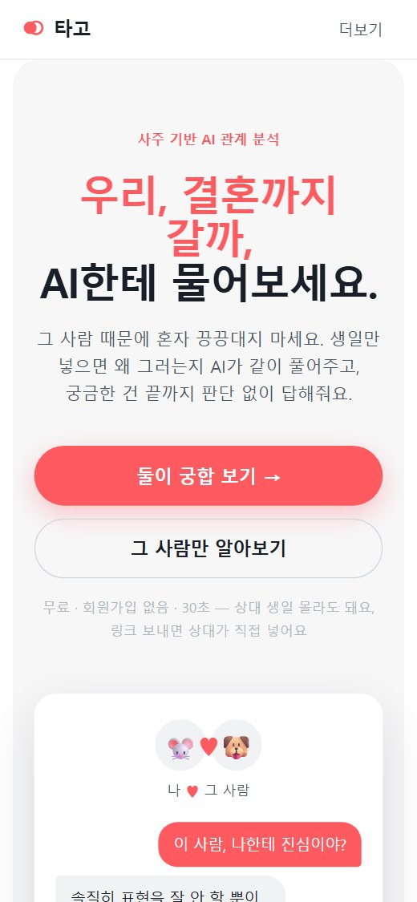
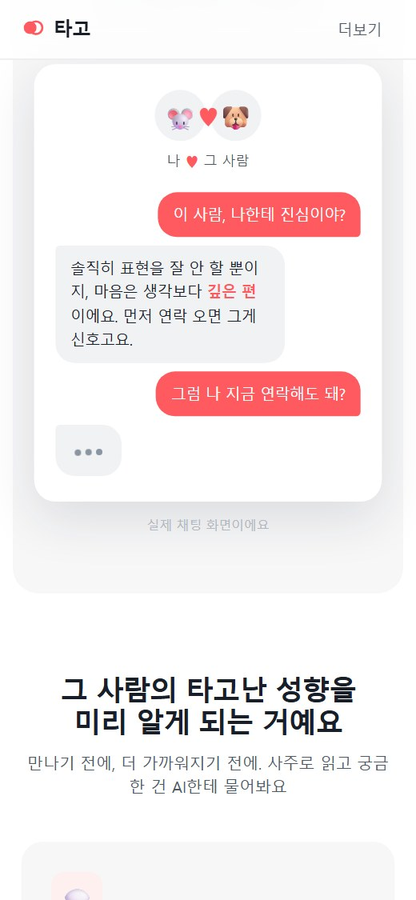
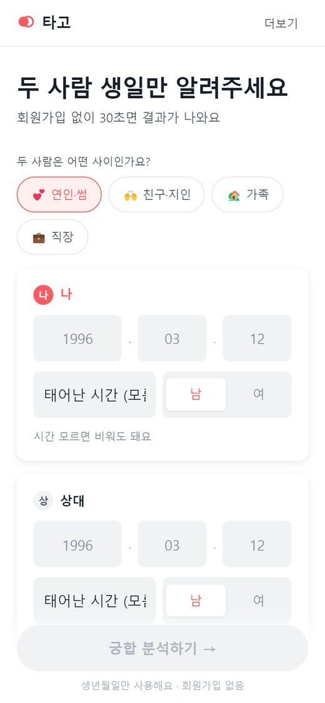
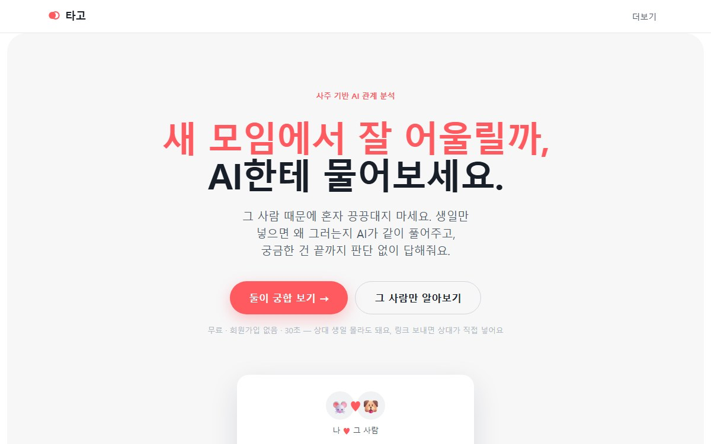

'타고'라는 이름은
'타고난 기질'에서 왔습니다
사람에게는 타고난 기질이 있다는 생각은 동양과 서양이 똑같이 공유해 온 오래된 직관입니다. 동양은 그것을 사주로 읽었고, 서양은 별자리와 기질론으로 읽었습니다. 읽는 방법은 달라도 "사람은 타고난다"는 전제는 같습니다. 그 전제를 이름에 그대로 담았습니다.
타고난 기질은 잘 변하지 않습니다. 그래서 같은 질문을 던져도 사람마다 반응이 다릅니다. 이 차이를 읽어낼 수 있다면, 상대가 지금 어떤 심리 상태인지도 읽어낼 수 있습니다. 사주를 기질 데이터 삼아 AI가 상대의 심리를 분석하고 상담해 주는 앱을 만든 이유입니다.
타고의 힘은 여기서 나옵니다. 누구에게도 꺼내기 어려운 가장 은밀한 고민까지, 다른 사람의 도움 없이 질문을 거듭하며 스스로를 객관화할 수 있고, 상대방의 상태까지 읽어낼 수 있습니다. 인간관계의 애매한 지점들로 어려움을 겪는 사람들에게, 타고는 상담의 대안이 됩니다.
타고난 기질은 잘 변하지 않는다.
그래서 같은 질문에도 사람마다 다르게 반응한다.
그 차이를 읽으면, 그 사람의 마음이 보인다.
-
이름
타고 = 타고난 기질. 서비스의 전제를 두 글자에 담은 네이밍.
-
전제
타고난 기질이 있다는 직관은 동서양이 같다. 사주는 그 기질을 읽는 동양의 데이터.
-
설계
기질은 변하지 않으므로 반응의 차이가 곧 심리의 단서. AI가 그 차이를 분석해 상담한다.
로고는 두 원의 겹침입니다. 채워진 원은 표현하는 사람, 비어 있는 링은 받아주는 사람. 두 원이 겹치는 자리에서 관계가 생깁니다. 색은 코랄 하나만 씁니다.
궁합 서비스는 결과지 한 장 주고
끝나 버립니다
기존 사주·궁합 서비스의 경험은 "점수와 해설 한 페이지"에서 멈춥니다. 그런데 진짜 니즈는 결과지가 아니라 그 다음에 있습니다. "이 사람, 나한테 진심이야?", "왜 연락이 뜸해졌을까?" 같은, 그 사람에 대해 계속 묻고 싶은 마음입니다.
그래서 결과지를 대화로 바꿨습니다. 궁합 분석은 시작점이고, 이후에는 상대의 성향에 대해 무엇이든 이어서 물어볼 수 있는 Q&A 채팅이 서비스의 중심입니다.
-
01
결과지에서 끝나는 경험
점수 확인 후 이탈. 관계 고민은 계속되는데 서비스는 단발성으로 끝납니다.
-
02
가입 장벽이 곧 이탈
감정이 동한 순간에 회원가입을 요구하면 그 순간의 니즈는 사라집니다.
-
03
상대 정보를 모른다는 벽
궁합을 보려면 상대 생일이 필요한데, 모르는 경우가 많습니다.
전환을 설계한 세 가지 결정
무가입 온보딩
생일만 넣으면 30초 안에 결과가 나옵니다. 회원가입 없음. 니즈가 가장 뜨거운 순간과 첫 결과 사이의 마찰을 0에 가깝게 만들었습니다.
결과지가 아니라 채팅
분석 결과에서 바로 "이 사람, 나한테 진심이야?" 같은 질문을 이어가는 대화형 UX. 디바이스당 무료 채팅을 제공하고, 그 이후는 이용권으로 전환합니다.
모르면 링크로 초대
상대 생일을 몰라도 됩니다. 링크를 보내면 상대가 직접 입력하는 초대 플로우로, 정보의 벽을 바이럴 루프로 뒤집었습니다.
웹과 앱, 운영 대시보드까지
목업이 아니라 지금 접속하면 나오는 실서비스 화면입니다. 모바일 웹 기준으로 설계하고 데스크톱까지 반응형으로 대응하며, 리뷰와 유입 통계를 보는 운영 대시보드도 직접 만들어 씁니다.




디자이너 혼자, AI와 함께,
기획부터 출시까지
이 서비스에는 개발팀이 없습니다. 화면 제작과 코드 작성은 AI에게 맡기고, 무엇을 만들지, 어떤 화면이 좋은 디자인인지, 어디까지가 베타 범위인지 판단하는 일을 제가 했습니다.
"AI 때문에 디자이너가 위험하다"는 말을 자주 듣습니다. 이 프로젝트는 그 반대 증명입니다. AI 덕분에 디자이너 혼자서 팀 하나 몫의 제품을 출시하고 운영할 수 있습니다.
-
01
AI 채팅 품질 설계
Anthropic API 직접 연동. 사주 데이터를 컨텍스트로 넣어, 판단하지 않고 끝까지 답하는 대화 톤을 프롬프트 레벨에서 설계했습니다.
-
02
운영 파이프라인
사용자 리뷰 수집 화면과 관리자 페이지를 직접 만들어 베타 피드백을 모으고, 코드 방식 이용권으로 결제까지 연결했습니다.
-
03
장애에 무너지지 않는 설계
부가 인프라 장애 시에도 핵심 기능은 동작하도록 fail-open 원칙으로 설계해, 1인 운영의 리스크를 낮췄습니다.
다음 단계
베타에서 검증 중인 가설과 출시 로드맵입니다.